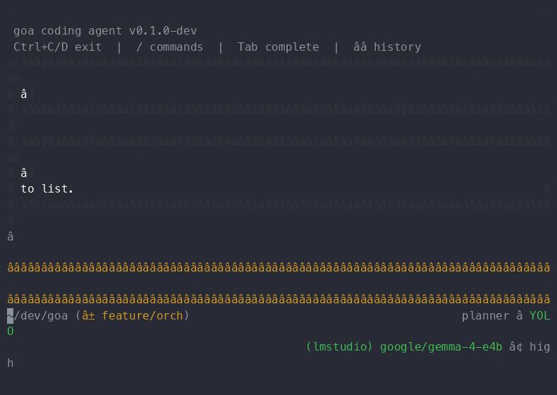

Goa Orchestrator Demo
Multi-agent orchestration with topologies, steering, and live TUI tabs

Demonstrates
/orchestrate
commands, listing runs, viewing help, and creating a new hub-topology run with tab completion.
← All Demos
Companion Demo →